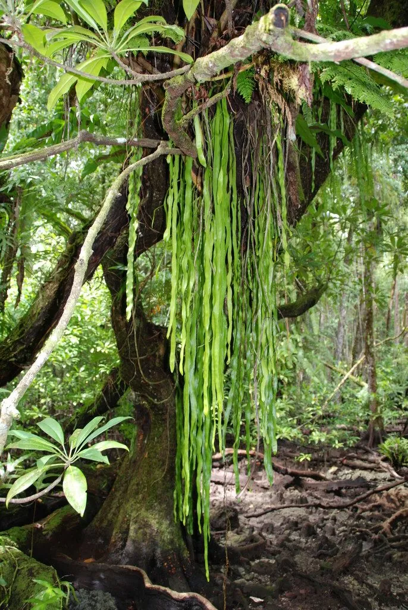

蕨类与裸子植物 · 植物界
带状瓶尔小草 Ophioderma pendulum

瓶尔小草科带状瓶尔小草属附生蕨类，叶片带状下垂、长达一米，孢子囊穗像蛇尾，是热带雨林中的珍稀附生植物。
- 分类
- 门蕨类植物门纲瓶尔小草纲目瓶尔小草目科瓶尔小草科属带状瓶尔小草属
- 栖息环境
- 热带雨林树干与腐木附生，喜高温高湿半阴
- 地理分布
- 中国云南、广西、海南、台湾；东南亚、澳大利亚
- 保护级别
- 国家二级重点保护野生植物；IUCN 暂无评估
物种志
带状瓶尔小草为瓶尔小草科带状瓶尔小草属附生蕨类，植株附生，根状茎短，密被纤维状根。叶片带状，下垂，长可达一米，宽一至两厘米，革质，表面深绿，先端渐尖。孢子囊穗单生或数枚，从叶片基部抽出，细长如蛇尾，孢子期夏秋季。
带状瓶尔小草分布于中国云南、广西、海南、台湾等地，东南亚、澳大利亚也有，多附生于热带雨林中的树干和腐木上。它喜高温高湿和半阴环境，适宜疏松透气的附生基质，不耐寒也不耐干旱。叶片带状下垂、姿态飘逸，是热带雨林温室中的珍稀观赏蕨类；由于野生种群稀少、生境受破坏，被列为国家二级重点保护野生植物。栽培中需保持高湿度和良好通风。
形态与习性
- 株高叶带状下垂，长可达 1 m
- 叶形带状，宽 1–2 cm
- 孢子期夏秋季，囊穗细长
- 光照喜半阴散射光
- 水分喜高湿，忌干燥
- 土壤疏松透气的附生基质
- 主要用途温室珍稀观赏蕨类
趣味知识
- 带状瓶尔小草附生于雨林树干，叶片像绿色的飘带一样垂下。
- 它的孢子囊穗细长弯曲，形似蛇尾，因此英文名意为蛇蕨。
- 瓶尔小草科植物多为地生小草，带状瓶尔小草却是附生的大型种类。